来源：https://dsehhuudnp.feishu.cn/docx/IgZhdk6ZwoUx3DxtqjccdWfinZc
生财小苗哥，现在武汉，安徽人。日更400篇原创文章！
15年毕业医学生毕业跨界进金融，2个月业绩到120万，擅长拆解项目玩法，研究高手思维！
18年独立出来合伙创业，赚到第一桶金，买了房车，19年结婚，结束和媳妇从校服到婚纱的7年恋爱5年异地的历程。
后面专注做互联网营销，目前是一家财经直播公司总运营兼股东，日常喜欢日更，觉察别人的优势，思考如何发挥价值。
上次在个人优势航海找到价值归属，航海中以个人优势出了自己人生第一单个人战略咨询，航海结束也收获一单微咨询，目前持续在践行优势才干在实际工作生活和副业领域的应用，特别在职场中以完美才干为自己职场老师做复盘，效果很好！
其他头衔，没有！哈哈哈
问一问的玩家现在应该不少了，所以平台的规则也一直在变，特别是近期我们发现有商家开始招问答点赞高的博主做付费问答广告，看到这里我们应到意识到，问一问的问答种草商业化来了！
这个对标我们可以参考知乎，小红书，问一问他目前的限制是10~500字以内，所以不可能产生像知乎那种文章体制的带货文，也不会像小红书那样走精美图片的方式！
那我觉察到的对标应该是什么呢？
电商的评论区——买家秀！（淘宝，京东，拼多多）
可以想象，现在这些老牌的电商流量早就进入了疲倦期，哪怕是小红书，今年都是各赛道人满为患，那么微信作为最大的社交平台，他有着得天独厚的社交流量和用户优势，在私域没有哪个平台干的过微信！
但是唯独微信自己没有推出电商，只是做控股。
但是我们发现微信的视频号他可以带货，我们也看到了公众号目前也能百粉开橱窗，所以电商微信不想做吗？
那么问一问目前我的思考是，腾讯在测试新的流量转化方式，因为问一问它是视频号和公众号直接绑定的，换句话说，问一问是在微信体系里的公域流量，而视频号和公众号他是个人的流量承接端口。
那么前期越早意识到这点，提前做很多关键词布局，问答布局，那么等大家都来，市场热度加大，各个行业的关键词搜索量暴涨的时候，你的问答给公众号和视频号的导流将会多么庞大！
现在你们会看到每个题目大都是百人很少有几千人关注的，还有很多领域比如财经类的，问题几乎都是个位数关注，但是依据稀缺原则，和趁早优势。
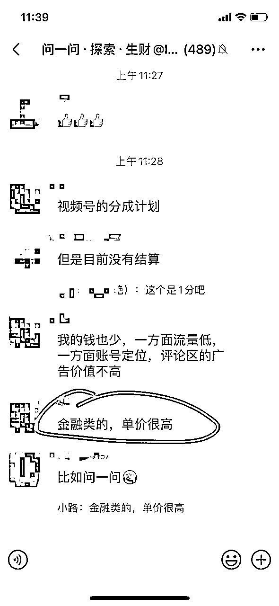
这些尚未被开发的地方，越早去布局关键词，等人潮来了，这些搜索问题的答案，就是会媲美以前的百度，知乎问答甚至这里都不需要跨平台引流，微信都给大家建立好了。
至于现在大家的账号经常关小黑屋的问题，其实很简单，我们常说用户思维，那平台思维是什么呢？
我得有优质的内容，有持续的创作者和用户，这个平台才会有关注度，回想抖音的发展史，2018年的抖音是最美的！
现在各种PK卖货，包括现在的小红书电商也是如此，这是平台的发展规律，最后都是要“卖东西”变现。
所以问一问早期，需要的不就是这些优质的创作者吗？
好好回答问题，未来的商家投放广告的标准 估计就是你的问答数，点赞数。而不是单纯的粉丝数！
经常回答出爆款高赞的，那在他那安排个广告投放，是不是明智的选择?
广告要的是曝光，小红书的报价是粉丝数的10%上下，那么如果商家们意识到问一问的商业价值，那会不会按照点赞数来付费？
现在我们接受到的广告报价，他们那个给App发广告的才2元一条，那市场如果认可这种投放，这个单价是不是就水涨船高？
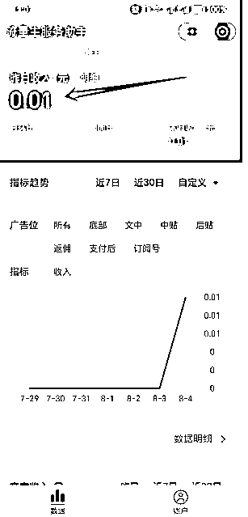
新公众号，几天时间，问答，500粉，开流量主，联想一下价值空间！
那么当下我们要考虑到未来的升值空间要做的是什么呢？
问答数量：每天20条，这是必须打满！ 因为说不定哪天会限制到每日10条，3条......
曝光量：找热门，出高赞
至于涨粉，这个是目前顺带，无论是视频号还是公众号，来关注的粉都是泛粉，如果你的视频号公众号没有足够垂直领域持续的内容输出，今天关注明天也会取消！
所以接下来讲一下，这些粉关注以后怎么过滤筛选，先变现一波！
首先跟大家建立一个共识：流量，从来的第一个粉就要考虑变现！
不要等到粉多再去变现，因为这过程有太多不可控因素，所以我们需要足够的正反馈来持续的让自己做下去！那么依据这个原则，我跟大家思考的不同的地方是：
如何让粉丝直接变现，但不产生伤害粉丝信任为前提的玩法！
所以这个路径就出来了，我们的AI软件或者自媒体工具包，各种学科行业资料，影视资源，结合网盘做拉新。
这样的方式是最容易变现，而且不会对粉丝产生信任伤害，同时可以长期培养私域价值。
这个玩法是属于免费的资料变现！
特别是很多刚玩问一问刚注册公众号的朋友，以及没有注重是公众号回复的圈友，我给大家简单的演示一下路线搭建，大佬们勿喷，毕竟信息差永远存在，新手居多！
第一种个人的订阅号：
这里我们常用的是快站，因为个人用快站可以满足很多需求，不过未认证的只能绑定一个公众号！
这是快站的网址：快站
我们注册好的公众号，登陆到电脑上，然后同步打开快站，用手机微信扫码注册，绑定你的公众号。然后进入控制界面
如下：
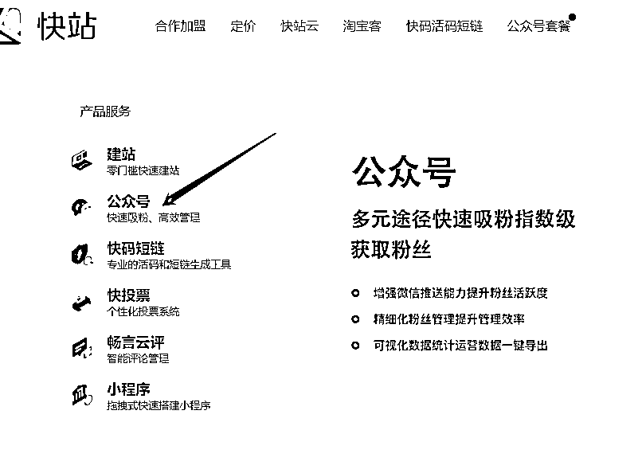
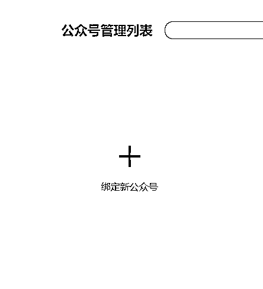
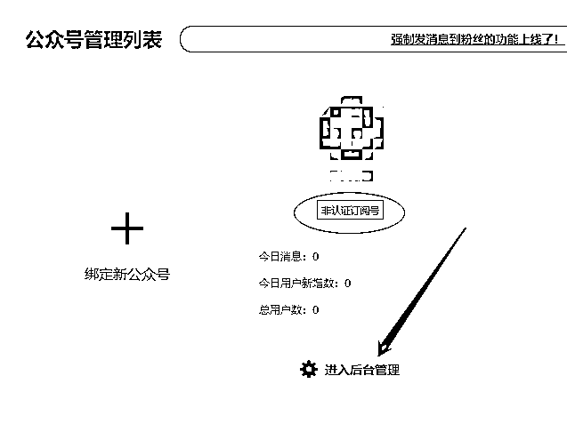
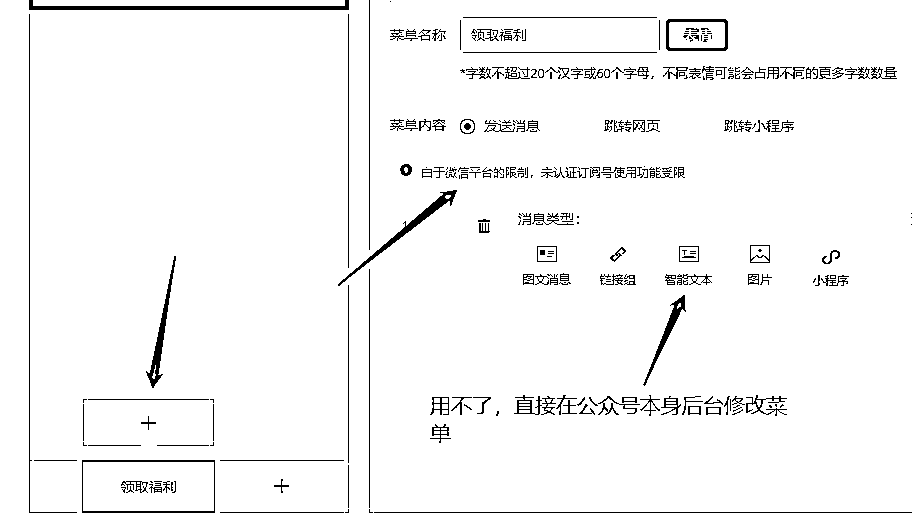
后面按照界面提示绑定自己的公众号即可，那么要修改的地方有三个位置：
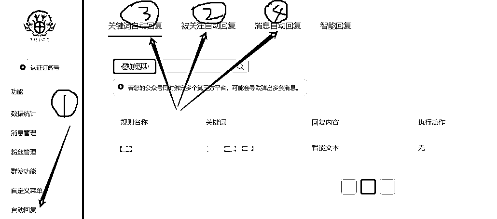
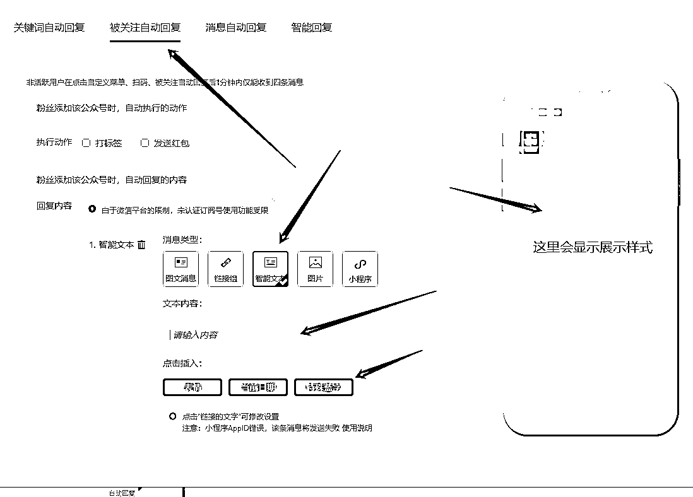
第一个被关注自动回复：
这是你公众号给用户的第一印象，所以这里要有个框架结构：
举例：
你是谁？
你的经历成绩有什么？
你有什么产品或者项目？
你有给新粉丝的福利有哪些？
如何链接你？链接你有什么好处？
我给个框架，内容大家可以自己填空，这里原则是简洁突出重点亮点优势，最后要注意的是送出的福利，这个需要用夸克网盘来做承接，或者用飞书链接也可以.
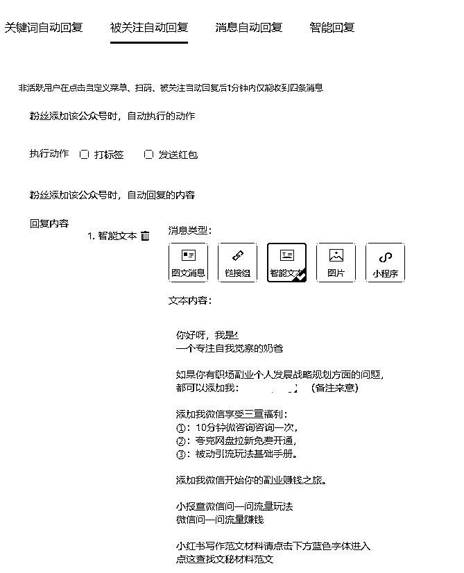
这里的蓝色字体是可以跳转链接的，给大家演示一下如何设置
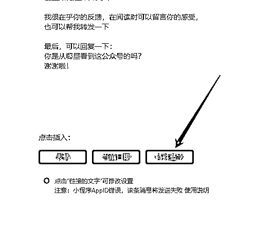
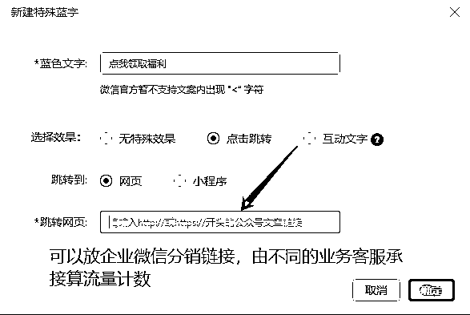
跳转网页可以用你的夸克网盘，或者用飞书网页！但是没认证的比如菜单栏，这个时候就可以先发一篇你想表达的产品或者个人介绍的文章，再把文章链接放进来，用户点击进来看也是一样的效果！
至于其他的自动回复，比如关键词自动回答，或者收到消息自动回复，操作同上！
有一个万能回答参考一下：
好的，收到你的消息，请点下方蓝色字体，添加上找我！
点这里找我领取
设置好，一定要点下面的发布两个字，然后拿你的小号微信去关注你的公众号，测试一下展示效果，包括美观度，不要拥挤，特别是不要出现大堆字堆叠，然后底下一堆链接，整齐，明了，方便点击才是好的介绍！
在自我介绍最后留了一句测试用户来源的话术，方便大家判断用户流量渠道，好作出平台运营精力的优化调整。
免费的用户对于转化添加微信，需要后期文章的培养，但是起码在这块你能够用网盘资料先赚点拉新的费用！
比如玩问一问老徐的专栏，老徐的专栏基本上我都订了，大家估计没有意识到这些低价专栏的价值所在，即借助有IP影响力的大佬筛选付费意识的用户。
生财有很多大咖，各种小报童的专栏，只要影响力足够的，都可以在推出的时候参与分销，低价进帮助自己筛选用户，同时，这里还藏着一个非常重要的玩法，叫社群的被动引流
这一篇留下次再分享，我说一下自己的小小成绩，一次布局，可以引流二十多位，精准的流量捕手，曾经用这个玩法在工作中，同行社群成交几万订单，十几万的客户客！
我们说粉丝是有价值层次的，也是需要精细化运营的，但是很多人它是不具备社群分享和持久运营的，因为收费的社群交付一定要超预期，不然只会伤害本人IP影响力。
这里做的很好是靠谱，理白等，目前大咖的陪伴群，那真是超值的分享，所以这样的用户粘性和IP影响力在日积月累中就牢牢占领用户的心智！
一个付费用户，可以有多次复购产品，有的时候并不是刚需，而是因为是你，所以他愿意支持，也就是我们常说的他买你的东西，是他想靠近你，他想看到你变得更好，他会觉得自己的看中的是那么优秀，因此你越赚钱，他就越觉得付费很值。
明星效应，都喜欢自己的爱豆更好！IP也是如此。
所以我的战略是：
借助他人的鱼塘养自己的鱼。
（这里有一门课，前期我是实战，后期我会，我之前讲的被动引流课，我以前用这个方法，在一些同行群里成交过几万的小单，还有十几万产品单价订单）
（昨天上午我的数据是超过20多位精准高质量的社群付费用户主动加我，这里价值玩私域的应该很清楚，垂直领域付费用户的主动添加意味着什么，但是不可触动群主利益，就是动作不要违法群规，让群主不快）
回到正题上，我们四百多位圈友，我知道有不少是有自己付费产品的，但是有个问题，就是问一问来的粉，不是能很好匹配你的产品，那么这里就出现一个需求矛盾。
粉丝需求不匹配产品功能
我对此的策略是先用问一问专栏过滤一边，再用副业陪跑项目筛选一边，最后以合伙人或者平台股东做高价单挖掘利润做裂变分销！
问一问，如果考虑后面商业化情况，我推测生财都会出问一问的航海，我猜测的哈。
因为今天我看他们的推文都是关于问一问的帖子，所以一个新风口肯定会有很多人来赚钱的。
那么作为我们早一批次玩这个的人，我们积累了大量问一问实战精华，这些汇总到了专栏，还有留存在社群。所以截图发圈发公众号，这是我们第一个可以为自己发布背书的方式。
我的朋友圈很多的营销文案就是来自社群大家讨论的踩坑经验，同样的这个模式适用于其他各个垂直领域的社群或者专栏分销。
以内社群内容为钩子，以氛围做诱饵，以低价做吸引，以大佬做背书，最后筛选出你的付费用户！
简单来说，就是一点副业概念都没有的互联网素人，他们没有经历过知识付费的教育，所以对于副业也好，对什么课程也罢，他缺乏概念和了解。
那么这里就需要你从最基础的副业是什么，为什么当下要做副业？什么副业适合新手小白操作？
做什么副业能日入500，日入1000.....
说白了，需要你培养他的副业意识，这就是纯小白粉丝的痛点！
卖东西，怎么才能卖出呢？
很简单，给他一个必须买的理由！
制造需求意识，这是我们做知识付费的人都要有思维，不然谁买你的产品！
因此，那些公众号有了粉丝，不知道发什么的人，看到这里你意识要怎么发文了吗？
发文章，最好有布局意识
即连续几天的公众号系列的文章，都是在讲一个事情，或者你可以理解为讲一个故事。
给大家举个例子，前面几天的文章，从问一问是什么，到问一问怎么玩，再升级一步到问一问涨粉怎么引流，最后问一问引流到公众号怎么变现？
所以这里是一种铺垫的递进关系，因为很多人关注你的公众号，他需要了解你能给大带来什么价值，那这个时候你的需要有足够的内容去树立你的影响力。
你看到我这么说估计又会好奇，这三杆枪怎么配合才能发挥威力？
这里给大家拆解一下IDO老徐怎么玩的，你们基本上每个人都有老徐的微信，换句话说你们都在他的朋友圈这个池子中！
这是第一杆可以打到你的枪！
那么有的人在知识星球，这个星球是有定位属性的，当然上面的朋友圈也有，分组发圈即可。
想一下，加了多少个大佬的星球，以老徐的为例，各种专题的星球，精准内容触达要么小红书的，视频号的，写作的成长的。
而且付费的和免费的内容和形式是有区别的，免费是日常所有的思考全部发过去，做内容沉淀。
50字短文打卡，你们知道这个事进行下去代表的意义吗？
在成长写作星球，如果你有每天参与打卡，那你将会收获三个好处，
第一个点，你的写作能力
写作的更深次是思考力，而短文50字，就在刻意锻炼你的思维提炼信息能力。
当你能坚持写一段时间，那么你的写作能力会慢慢提升，这个时候你再写公众号，还会出现说不知道写什么，写不出来东西吗？
第二点，持续曝光！
你的日更打卡，是能曝光的。要知道那些星球都是几万人的社群，如果你写的不错，思考的有深度，被老徐精选发圈，那是不是可以提升你的IP影响力呢？
这里举几个例子，比如深圳大冲，大冲在群里的大家应该都比较熟悉，经常分享很多干货，他的公众号这个月应该涨快两千粉，就是问一问来的。
那他分享的内容加上他的实战背书，你会不会想着去链接，占个好友位？
如果他的产品再有能适合匹配你的需求话，这个成交是不是顺理成章？
第三点：老徐赋能
你能坚持打开一年，你一定会跟老徐有深度链接的，自然他的产品也好，专栏就不用说了，比如之前做找老徐做咨询的月起星九圈友，那场咨询是免费给了我们生财陪伴群分享的。
从那次之后，基本上我看到有跟老徐产生深度链接的圈友，只要分享的有价值，那么老徐会用自己的影响力为他赋能，做流量背书！
第三个公众号：
那么你会发现，他的公众号是星球内容加专栏，这里的玩法你们不可以做吗？
大佬把自己的玩法都摆在眼前了，照着复制就好了哇！
日常的星球思考，各种社群的分享，沉淀下来后，发文到公众号，专栏放后面转化，所以你看一个公众号完成了一天的内容沉淀和汇总。
需要写长文吗？不用
不过我的习惯是写长文，因为我做的是拆解，尽量写详细。那么你就思考一下，你是能写短文思考，还是适合像我一样写拆解复盘？
这种是有副业经历的，起码是有知识付费的这个意识，那么这种粉丝就很简单了，来关注你的时候，需要提前准备三样东西！
影响力一书中说，当你跟某个人交往时，送对方一份喜欢的礼物，会很容易拉近关系。
因此，你们会发现很多玩知识付费的博主，那些各种大的IP，当你一加上对方，他的信任营销就开始了。
从自我介绍中，就埋下了需求的钩子，从给你的福利资料中，就在你的脑子里植入IP影响力。
特别是发个人简介，以故事形式讲解如何一路打怪升级的，以具体产品或者项目翻身的，那等待你付费的就是那个他拿到结果的项目！
所以，我们的资料包，或者什么副业合集，什么项目教程，都要有一个植入思维，就是把你的影响力和资料结合，让他看到之后，就想跟你深入链接，以至于付费学习。
网盘资料我整理了八十多个AI相关的软件，工具包，各种好用资源，足够来的粉丝使用了！
如果你说，我没啥产品怎么办？
分销行不行？
这个自我介绍是要不断的迭代更新的，举个例子，在问一问的圈友，有看过飞巴老师的自我介绍吗？
他的自我介绍，其实应该叫自我产品介绍，哈哈
所以你在看到他的自我介绍文章，你首先会想——好牛，职场人怎么把副业做的这么厉害，我能不能跟他咨询一下，我应该怎么做副业？
所以你看他的产品就出来了，个人咨询！
那你的自我介绍应该怎么写呢？
是谁？经历？成绩？产品？需求？
所以一份合格的自我介绍应该能够快速占领链接者的心智高地！
因为人性是慕强的，只有你比我强，我才会需求你的帮助，靠近你，链接你，付费买单！
我们说，对一个人最大的认可，为他的价值付费！
所以自我介绍，加上送的福利，是第一关系建立时，一定要准备齐全的，不然你可以不主动说话！
如果对方是从社群来的或者搜索微信来的，通过后自我介绍，加福利赠送，最后推上你的公众号！
公众号不要放在自我介绍里，因为有的时候人是很懒得。
你得在发完上面的之后，最后推送公众号名片。因为点一下，就关注了。
而不是让他去搜索，至于不放星球的原因是，最容易触达的一定是朋友圈和微信私聊。
公众号，无论是什么时候，要写一篇个人经历，或者你的产品介绍，项目介绍。这是为了让别人了解你，为你付费的钩子！
并且这个是可以持续迭代的，跟自我介绍一样！
然后朋友圈的包装分类，做有很多做朋友圈训练营的，教别人发朋友圈，这个我个人觉得发朋友圈，发真诚点，真实点，走点心，最后加上产品和价值，感兴趣的自然感兴趣，不然发什么都是垃圾！
所以很多的大佬的朋友圈都是定向的精准触达，什么分类的发什么朋友圈，对症下药！因此，添加那一刻，属性归类就很重要啦！
同步做好标签分类，他是哪里来的，做什么的、能不能未来给你付费，你大概心理就要有个判断，发朋友圈触达时，就有针对性！
那么好以上三样都准备好了，通过好友准备开聊！
你能看到这里，我想你应该了解到我擅长的是什么了哈，我的盖洛普优势才干，前五个
完美，理念，战略，前瞻，学习
所以我喜欢制作玩法系统，想很多的营销思路，觉察别人优势，在玩问一问的时候，我的重心并不是在问一问涨粉多少上，而是在思考如何给那些玩问一问涨了粉的人提供价值。
即我想的是把这些特定领域搞流量的整合起来，我们做后端转化设计。
我把玩问一问等在一线搞流量的人我取了一个称呼，叫流量捕手，我的定位是捕手经纪人，所以我要做的是应该链接更多的一线流量捕手，然后我设计转化路径和交付团队，帮助他们最大化完成粉丝转化，
他们收钱，我们交付，就是以分销思维，管道收益做长期变现。
目前这个路已经打通，接下来就是持续的链接和做交付了。
当然，生财这么多人，大家都有资源完全可以组队，比如我之前在个人优势航海中，我提到的五人模型，即优势铁，在流量，战略，交付，社群，影响力多个维度组成团队，最鲜明的例子，生财拉新的靠谱，醒醒，理白等，这就是极致的分工来的极致效果。
以才干结识，以人品结交，以价值观合作，以利益绑定，以系统运营！
第一次发文，潜水很久，一直在学习，成绩没多少亮眼的。日更了四百多篇原创文章，链接了一群优质的实战高手，学习到很多系统性思维，然，自身条件有限，仍需不断精进！
本篇希望对刚进自媒体刚玩副业的朋友，希望能有所帮助，若对大家有启发，那甚感荣幸！
谢谢你耐心阅读本文，祝好！
我是生财小苗哥，一个喜欢自我觉察的男人！